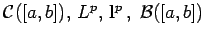

Inhalt Index DeskTop Bronstein

 Funktionalanalysis Normierte Räume Geordnete normierte Räume
Funktionalanalysis Normierte Räume Geordnete normierte Räume


Sei  ein Vektorverband, der gleichzeitig ein normierter Raum ist,
ein Vektorverband, der gleichzeitig ein normierter Raum ist,  heißt normierter Verband oder normierter Vektorverband (s. Lit. 12.18, 12.22, 12.25, 12.26), wenn die Norm der Bedingung
heißt normierter Verband oder normierter Vektorverband (s. Lit. 12.18, 12.22, 12.25, 12.26), wenn die Norm der Bedingung
genügt. Ein vollständiger (bezüglich der Norm) normierter Verband heißt BANACH-Verband.
| Beispiel |
|
Die Räume  sind BANACH-Verbände. |